Candidate List 20261009Last night — ZTF: 3,650 passed basic cuts (70 young) · LSST: 0 passed basic cuts (0 young)Previous Day Next Day
Section 1: New Sources (age<1d) Section 2: Old (1-5d) sources observed last nightplaceholder
Section 2: Older Sources Observed Last Night (21)
0. [ZTF] ZTF26abzhmze (FBOT?) [Back to Top] [Share] [Trigger Swift] [Fritz Alert] [Fritz Source] [Lasair]RA, Dec: 102.65162, 58.60233 6h50m36.39s, 58d36m8.40sGalactic (l, b): 157.34347, 22.80108 ext(g-r) = 0.056


TESS: Sectors [20 60 73]
PS1: 0 sources in 3 arcsec
LegacySurvey: 1 sources in 3 arcsec Closest: d = 0.24 arcsec, 96.0 deg (east of north) photoz=0.59 (68% bounds 0.13, 0.86), type=EXP peak abs mag (ext. corrected) = -24.12 (68% bounds -20.41, -25.12)

Extinction-corrected gr color:
From alerts: -0.24 +/- 0.09 mag
Rise Rate:
g: 0.25 mag/day
r: 0.26 mag/day
Fade Rate:
1. [ZTF] ZTF26abznbhu (FBOT?) [Back to Top] [Share] [Trigger Swift] [Fritz Alert] [Fritz Source] [Lasair]RA, Dec: 61.06203, -12.00612 4h 4m14.89s, -12d 0m-22.01sGalactic (l, b): 204.1897, -42.45825 ext(g-r) = 0.064


TESS: Sectors [ 5 31]
PS1: 0 sources in 3 arcsec
LegacySurvey: 1 sources in 3 arcsec Closest: d = 0.18 arcsec, 46.6 deg (east of north) photoz=0.15 (68% bounds 0.08, 0.19), type=SER peak abs mag (ext. corrected) = -19.78 (68% bounds -18.22, -20.4)

Extinction-corrected gr color:
From alerts: -0.27 +/- 0.26 mag
Extinction-corrected gi color:
From alerts: -0.32 +/- 0.24 mag
Extinction-corrected ri color:
From alerts: -0.54 +/- 0.3 mag
Rise Rate:
g: 0.17 mag/day
r: 0.2 mag/day
Fade Rate:
2. [ZTF] ZTF26abzqaqg (FBOT?) [Back to Top] [Share] [Trigger Swift] [Fritz Alert] [Fritz Source] [Lasair]RA, Dec: 353.98184, 22.85713 23h35m55.64s, 22d51m25.66sGalactic (l, b): 101.07537, -36.78909 ext(g-r) = 0.069


TESS: Sectors [56 83]
SDSS (<15 kpc):Found SDSS phot-z: z=0.82; peak abs mag = -23.71
PS1: 0 sources in 3 arcsec
LegacySurvey: 1 sources in 3 arcsec Closest: d = 0.76 arcsec, 266.0 deg (east of north) photoz=0.21 (68% bounds 0.15, 0.3), type=EXP peak abs mag (ext. corrected) = -20.26 (68% bounds -19.38, -21.1)

Extinction-corrected gr color:
From alerts: -0.26 +/- 0.22 mag
Rise Rate:
g: 0.22 mag/day
r: 0.03 mag/day
Fade Rate:
3. [ZTF] ZTF26abzwbsb (FBOT?) [Back to Top] [Share] [Trigger Swift] [Fritz Alert] [Fritz Source] [Lasair]RA, Dec: 317.57819, 9.73757 21h10m18.77s, 9d44m15.24sGalactic (l, b): 59.57804, -24.99031 ext(g-r) = 0.097


TESS: Sectors [55 82]
SDSS (<15 kpc):Found SDSS phot-z: z=0.24; peak abs mag = -21.02
PS1: 0 sources in 3 arcsec
LegacySurvey: 1 sources in 3 arcsec Closest: d = 1.73 arcsec, 13.5 deg (east of north) photoz=0.1 (68% bounds 0.07, 0.12), type=SER peak abs mag (ext. corrected) = -18.93 (68% bounds -18.18, -19.36)


Extinction-corrected gr color:
From alerts: -0.58 +/- 99 mag
Rise Rate:
g: 0.21 mag/day
Fade Rate:
4. [ZTF] ZTF26acaaayt (FBOT?) [Back to Top] [Share] [Trigger Swift] [Fritz Alert] [Fritz Source] [Lasair]RA, Dec: 77.38102, 75.74584 5h 9m31.45s, 75d44m45.04sGalactic (l, b): 136.64545, 20.34544 ext(g-r) = 0.177


TESS: Sectors [19 25 26 52 53 59 60 73 79 86]
PS1: 1 source in 3 arcsec Closest: d = 0.69 arcsec photoz=0.12+/-0.04 peak abs mag = -19.50
LegacySurvey: 0 sources in 3 arcsec

Extinction-corrected gr color:
From alerts: -0.17 +/- 0.23 mag
Consistent with synchrotron, g-r>0!
Rise Rate:
g: 0.25 mag/day
r: 0.21 mag/day
Fade Rate:
5. [ZTF] ZTF26acaahql (FBOT?) [Back to Top] [Share] [Trigger Swift] [Fritz Alert] [Fritz Source] [Lasair]RA, Dec: 32.48331, 10.76004 2h 9m55.99s, 10d45m36.14sGalactic (l, b): 152.22521, -47.59751 WARNING: -2.21 deg from ecliptic plane ext(g-r) = 0.107


TESS: Sectors [42 43 70 71]
NED host (10 arcsec):Found UGC 01662 (G, 9.3″); NED spec-z: z=0.0229 [zflag S1L]; peak abs mag = -16.54
PS1: 0 sources in 3 arcsec
LegacySurvey: 1 sources in 3 arcsec Closest: d = 0.88 arcsec, 252.0 deg (east of north) photoz=0.21 (68% bounds 0.02, 0.79), type=PSF peak abs mag (ext. corrected) = -21.56 (68% bounds -16.66, -24.98)

Extinction-corrected gr color:
From alerts: 0.49 +/- 0.14 mag
Extinction-corrected gi color:
From alerts: 0.45 +/- 0.15 mag
Extinction-corrected ri color:
From alerts: -0.04 +/- 0.07 mag
Consistent with synchrotron, g-r>0!
Rise Rate:
g: 0.22 mag/day
r: 0.3 mag/day
i: 0.24 mag/day
Fade Rate:
6. [ZTF] ZTF26acaddjo (FBOT?) [Back to Top] [Share] [Trigger Swift] [Fritz Alert] [Fritz Source] [Lasair]RA, Dec: 100.46327, 21.89945 6h41m51.18s, 21d53m58.03sGalactic (l, b): 192.26759, 7.79027 WARNING: -1.19 deg from ecliptic plane ext(g-r) = 0.161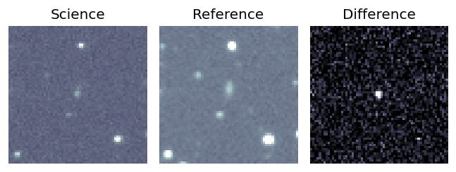
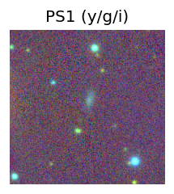

TESS: Sectors [43 44 45 71 72]
PS1: 1 source in 3 arcsec Closest: d = 2.38 arcsec photoz=0.17+/-0.05 peak abs mag = -20.92
LegacySurvey: 0 sources in 3 arcsec
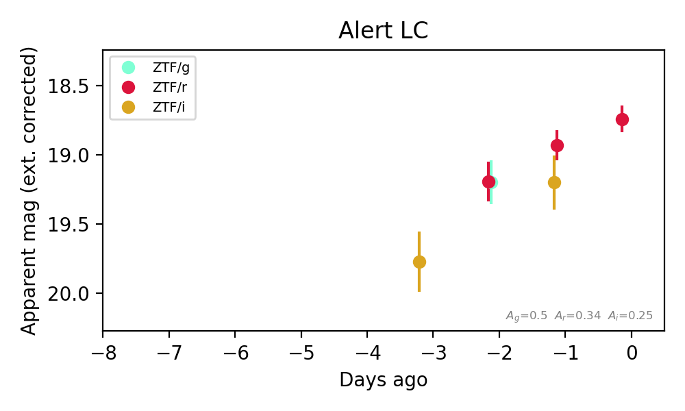
Extinction-corrected gr color:
From alerts: 0.0 +/- 0.21 mag
Extinction-corrected ri color:
From alerts: -0.27 +/- 0.22 mag
Consistent with synchrotron, g-r>0!
Rise Rate:
g: 0.05 mag/day
r: 0.22 mag/day
Fade Rate:
7. [ZTF] ZTF26acalpow (FBOT?) [Back to Top] [Share] [Trigger Swift] [Fritz Alert] [Fritz Source] [Lasair]RA, Dec: 71.88225, 4.365 4h47m31.74s, 4d21m54.01sGalactic (l, b): 193.49035, -24.96351 ext(g-r) = 0.102


TESS: Sectors 110
PS1: 0 sources in 3 arcsec
LegacySurvey: 1 sources in 3 arcsec Closest: d = 0.22 arcsec, 128.3 deg (east of north) photoz=0.16 (68% bounds 0.1, 0.25), type=EXP peak abs mag (ext. corrected) = -19.82 (68% bounds -18.8, -20.9)

Extinction-corrected gr color:
From alerts: -0.51 +/- 99 mag
Extinction-corrected gi color:
From alerts: -0.11 +/- 0.37 mag
Extinction-corrected ri color:
From alerts: 1.0 +/- 99 mag
Consistent with synchrotron, g-r>0!
Rise Rate:
g: 0.43 mag/day
Fade Rate:
8. [ZTF] ZTF26acaorbx (Afterglow?) [Back to Top] [Share] [Trigger Swift] [Fritz Alert] [Fritz Source] [Lasair]RA, Dec: 98.3834, 24.3722 6h33m32.02s, 24d22m19.91sGalactic (l, b): 189.17645, 7.17498 WARNING: 1.15 deg from ecliptic plane ext(g-r) = 0.299


TESS: Sectors [43 44 45 71 72]
NED photo-z only: WISEA J063332.07+242224.9 (G, 5.1″) z=0.0447 [zflag PUN] — not used for peak abs mag
PS1: 1 source in 3 arcsec Closest: d = 4.85 arcsec photoz=0.05+/-0.01 peak abs mag = -17.75
LegacySurvey: 0 sources in 3 arcsec

Extinction-corrected gr color:
From alerts: -0.06 +/- 0.19 mag
Extinction-corrected gi color:
From alerts: -0.22 +/- 0.26 mag
Extinction-corrected ri color:
From alerts: -0.64 +/- 0.24 mag
Consistent with synchrotron, g-r>0!
Rise Rate:
g: 0.85 mag/day
r: 0.4 mag/day
Fade Rate:
9. [ZTF] ZTF24aaangzq (Afterglow?) [Back to Top] [Share] [Trigger Swift] [Fritz Alert] [Fritz Source] [Lasair]RA, Dec: 66.85397, 1.14071 4h27m24.95s, 1d 8m26.55sGalactic (l, b): 193.4754, -30.93129 ext(g-r) = 0.137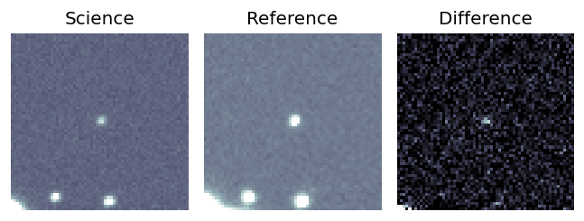
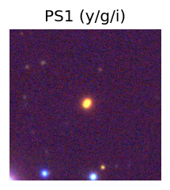
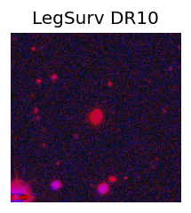
TESS: Sectors [ 5 32 98 110]
PS1: 0 sources in 3 arcsec
LegacySurvey: 0 sources in 3 arcsec
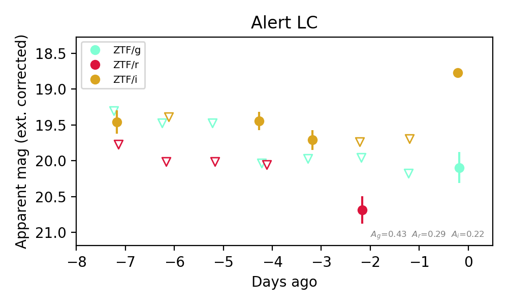
Extinction-corrected gr color:
From alerts: -0.73 +/- 99 mag
Extinction-corrected gi color:
From alerts: 1.33 +/- 0.23 mag
Extinction-corrected ri color:
From alerts: 0.95 +/- 99 mag
Consistent with synchrotron, g-r>0!
Rise Rate:
i: 0.93 mag/day
Fade Rate:
i: 0.14 mag/day
10. [ZTF] ZTF26acaetjg (Afterglow?) [Back to Top] [Share] [Trigger Swift] [Fritz Alert] [Fritz Source] [Lasair]RA, Dec: 294.88673, -13.50568 19h39m32.81s, -13d-30m-20.44sGalactic (l, b): 26.00958, -16.66742 ext(g-r) = 0.229


TESS: Sectors [ 54 81 92 116]
PS1: 0 sources in 3 arcsec
LegacySurvey: 0 sources in 3 arcsec

Extinction-corrected gr color:
From alerts: -0.3 +/- 0.17 mag
Extinction-corrected gi color:
From alerts: -0.34 +/- 0.14 mag
Extinction-corrected ri color:
From alerts: -0.04 +/- 0.15 mag
Consistent with synchrotron, g-r>0!
Rise Rate:
g: 0.54 mag/day
r: 0.31 mag/day
i: 0.12 mag/day
Fade Rate:
11. [ZTF] ZTF26acaezkn (FBOT?) [Back to Top] [Share] [Trigger Swift] [Fritz Alert] [Fritz Source] [Lasair]RA, Dec: 291.59648, 46.17759 19h26m23.16s, 46d10m39.32sGalactic (l, b): 78.16896, 13.614 ext(g-r) = 0.114


TESS: Sectors [ 14 15 40 41 54 55 74 75 81 82 119 120]
PS1: 1 source in 3 arcsec Closest: d = 1.25 arcsec photoz=0.42+/-0.02 peak abs mag = -23.01
LegacySurvey: 0 sources in 3 arcsec

Extinction-corrected gr color:
From alerts: -0.5 +/- 0.17 mag
Rise Rate:
g: 1.41 mag/day
r: 0.56 mag/day
Fade Rate:
r: 0.49 mag/day
12. [ZTF] ZTF26acaggfi (FBOT?) [Back to Top] [Share] [Trigger Swift] [Fritz Alert] [Fritz Source] [Lasair]RA, Dec: 346.5291, 15.09848 23h 6m6.98s, 15d 5m54.52sGalactic (l, b): 88.57331, -40.64298 ext(g-r) = 0.15


TESS: Sectors [56 83]
SDSS (<15 kpc):Found SDSS phot-z: z=0.38; peak abs mag = -21.88
PS1: 0 sources in 3 arcsec
LegacySurvey: 1 sources in 3 arcsec Closest: d = 0.94 arcsec, 67.1 deg (east of north) photoz=0.13 (68% bounds 0.07, 0.17), type=DEV peak abs mag (ext. corrected) = -19.2 (68% bounds -17.86, -19.93)


Extinction-corrected gr color:
From alerts: -0.26 +/- 0.25 mag
Rise Rate:
g: 0.28 mag/day
r: 0.21 mag/day
Fade Rate:
13. [ZTF] ZTF26acahriv (FBOT?) [Back to Top] [Share] [Trigger Swift] [Fritz Alert] [Fritz Source] [Lasair]RA, Dec: 338.72553, 47.97363 22h34m54.13s, 47d58m25.07sGalactic (l, b): 100.58439, -8.88534 ext(g-r) = 0.164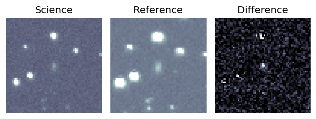
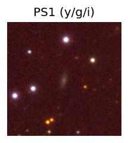

TESS: Sectors [16 56 57 76 77 83 84]
PS1: 1 source in 3 arcsec Closest: d = 1.24 arcsec photoz=0.19+/-0.07 peak abs mag = -19.75
LegacySurvey: 0 sources in 3 arcsec
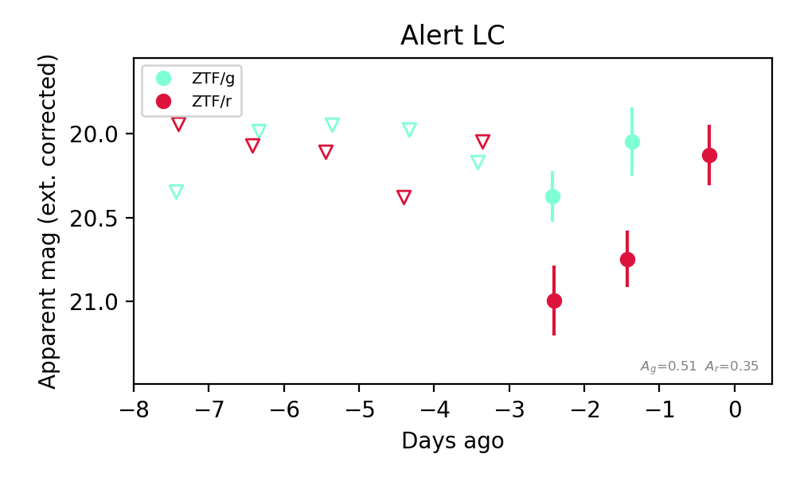
Extinction-corrected gr color:
From alerts: -0.7 +/- 0.26 mag
Rise Rate:
g: 0.02 mag/day
r: 0.43 mag/day
Fade Rate:
14. [ZTF] ZTF26acaoxur (FBOT?) [Back to Top] [Share] [Trigger Swift] [Fritz Alert] [Fritz Source] [Lasair]RA, Dec: 227.39946, 10.97229 15h 9m35.87s, 10d58m20.25sGalactic (l, b): 13.22748, 53.75519 ext(g-r) = 0.047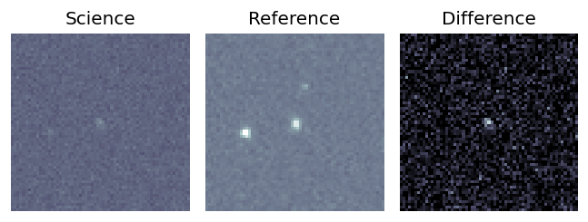
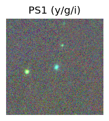
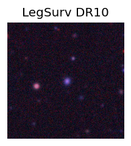
TESS: Sectors 51
SDSS (<15 kpc):Found SDSS phot-z: z=0.13; peak abs mag = -20.52
PS1: 0 sources in 3 arcsec
LegacySurvey: 1 sources in 3 arcsec Closest: d = 1.01 arcsec, 237.9 deg (east of north) photoz=0.12 (68% bounds 0.1, 0.14), type=REX peak abs mag (ext. corrected) = -20.41 (68% bounds -19.86, -20.81)
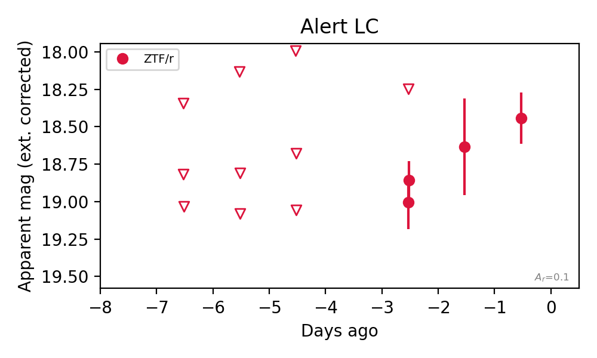
Rise Rate:
r: 0.23 mag/day
Fade Rate:
15. [ZTF] ZTF26acapmlf (Afterglow?) [Back to Top] [Share] [Trigger Swift] [Fritz Alert] [Fritz Source] [Lasair]RA, Dec: 311.55875, 48.09294 20h46m14.10s, 48d 5m34.57sGalactic (l, b): 87.00704, 3.08956 ext(g-r) = 2.929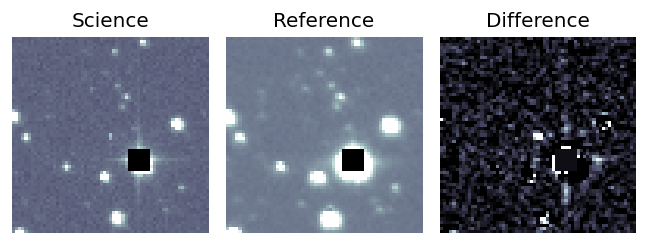
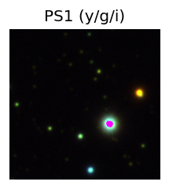

TESS: Sectors [ 15 16 55 56 75 76 82 83 120 121]
PS1: 0 sources in 3 arcsec
LegacySurvey: 0 sources in 3 arcsec
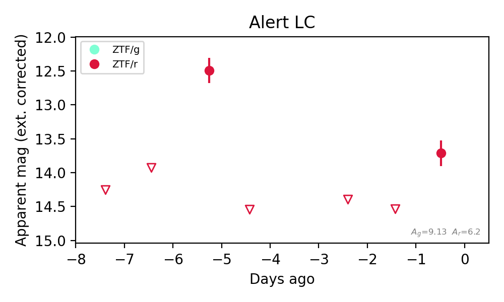
Extinction-corrected gr color:
From alerts: -1.46 +/- 99 mag
Rise Rate:
r: 1.21 mag/day
Fade Rate:
r: 2.46 mag/day
16. [ZTF] ZTF26acardoi (Afterglow?) [Back to Top] [Share] [Trigger Swift] [Fritz Alert] [Fritz Source] [Lasair]RA, Dec: 304.36176, 35.44433 20h17m26.82s, 35d26m39.59sGalactic (l, b): 73.64542, -0.07621 ext(g-r) = 4.125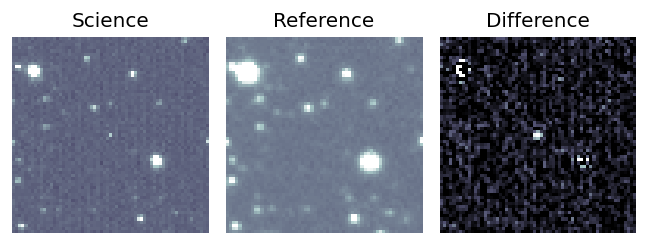
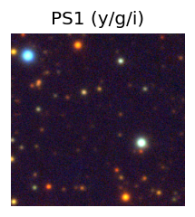

TESS: Sectors [ 14 15 41 55 75 81 82 120]
PS1: 1 source in 3 arcsec Closest: d = 3.43 arcsec photoz=0.77+/-0.47 peak abs mag = -33.00
LegacySurvey: 0 sources in 3 arcsec
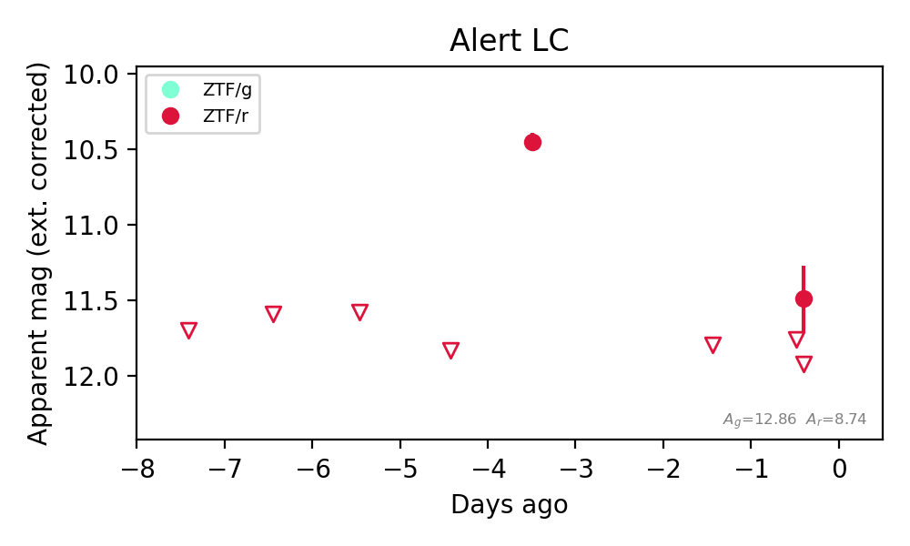
Extinction-corrected gr color:
From alerts: -3.73 +/- 99 mag
Rise Rate:
r: 1.47 mag/day
Fade Rate:
r: 0.66 mag/day
17. [ZTF] ZTF26acarmzm (Afterglow?FBOT?) [Back to Top] [Share] [Trigger Swift] [Fritz Alert] [Fritz Source] [Lasair]RA, Dec: 356.593, 52.02562 23h46m22.32s, 52d 1m32.24sGalactic (l, b): 112.86586, -9.56989 ext(g-r) = 0.204


TESS: Sectors [17 24 57 84]
SDSS (<15 kpc):Found SDSS phot-z: z=0.06; peak abs mag = -18.20
PS1: 1 source in 3 arcsec Closest: d = 0.38 arcsec photoz=0.12+/-0.04 peak abs mag = -19.81
LegacySurvey: 0 sources in 3 arcsec

Extinction-corrected gr color:
From alerts: 0.28 +/- 0.2 mag
Extinction-corrected gi color:
From alerts: 0.33 +/- 99 mag
Extinction-corrected ri color:
From alerts: 0.72 +/- 99 mag
Consistent with synchrotron, g-r>0!
Rise Rate:
g: 0.54 mag/day
r: 1.1 mag/day
i: 0.02 mag/day
Fade Rate:
18. [ZTF] ZTF26acastms (Afterglow?) [Back to Top] [Share] [Trigger Swift] [Fritz Alert] [Fritz Source] [Lasair]RA, Dec: 353.164, 31.89531 23h32m39.36s, 31d53m43.10sGalactic (l, b): 104.01081, -28.06546 ext(g-r) = 0.099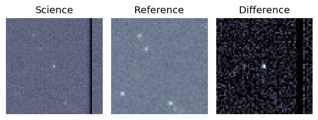
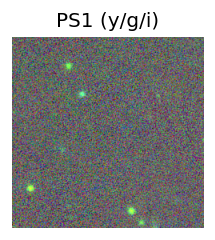
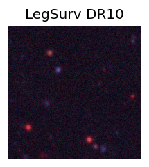
TESS: Sectors [57 83 84]
PS1: 0 sources in 3 arcsec
LegacySurvey: 0 sources in 3 arcsec
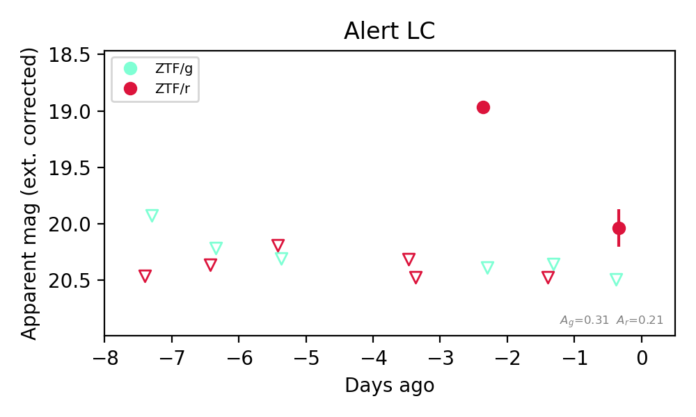
Extinction-corrected gr color:
From alerts: 0.46 +/- 99 mag
Rise Rate:
r: 1.51 mag/day
Fade Rate:
r: 1.57 mag/day
19. [ZTF] ZTF26acavcli (Afterglow?) [Back to Top] [Share] [Trigger Swift] [Fritz Alert] [Fritz Source] [Lasair]RA, Dec: 33.60592, 8.80269 2h14m25.42s, 8d48m9.68sGalactic (l, b): 155.0529, -48.8244 WARNING: -4.43 deg from ecliptic plane ext(g-r) = 0.12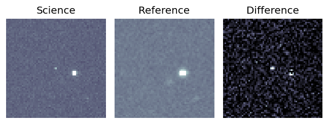
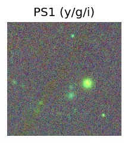
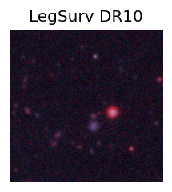
TESS: Sectors [42 43 70 71]
PS1: 0 sources in 3 arcsec
LegacySurvey: 1 sources in 3 arcsec Closest: d = 5.69 arcsec, 214.5 deg (east of north) photoz=0.84 (68% bounds 0.78, 0.94), type=REX peak abs mag (ext. corrected) = -24.41 (68% bounds -24.22, -24.7)
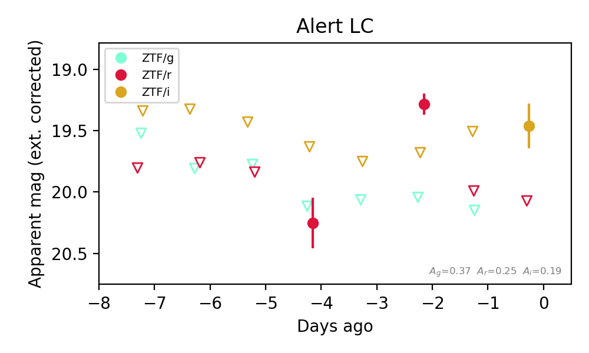
Extinction-corrected gr color:
From alerts: 0.76 +/- 99 mag
Extinction-corrected ri color:
From alerts: 0.61 +/- 99 mag
Rise Rate:
r: 0.48 mag/day
Fade Rate:
r: 0.79 mag/day
20. [ZTF] ZTF26acayken (Afterglow?) [Back to Top] [Share] [Trigger Swift] [Fritz Alert] [Fritz Source] [Lasair]RA, Dec: 99.05431, 54.25645 6h36m13.03s, 54d15m23.21sGalactic (l, b): 161.15711, 19.60856 ext(g-r) = 0.087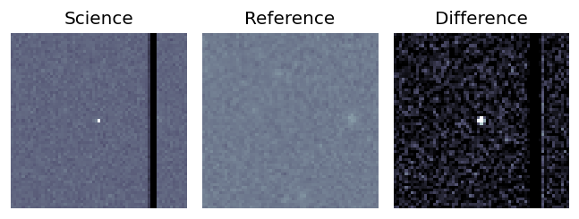
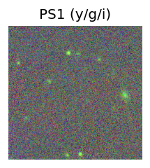
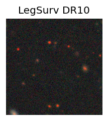
TESS: Sectors [20 60 73]
PS1: 0 sources in 3 arcsec
LegacySurvey: 1 sources in 3 arcsec Closest: d = 6.18 arcsec, 230.4 deg (east of north) photoz=0.8 (68% bounds 0.52, 1.08), type=PSF peak abs mag (ext. corrected) = -26.7 (68% bounds -25.55, -27.49)
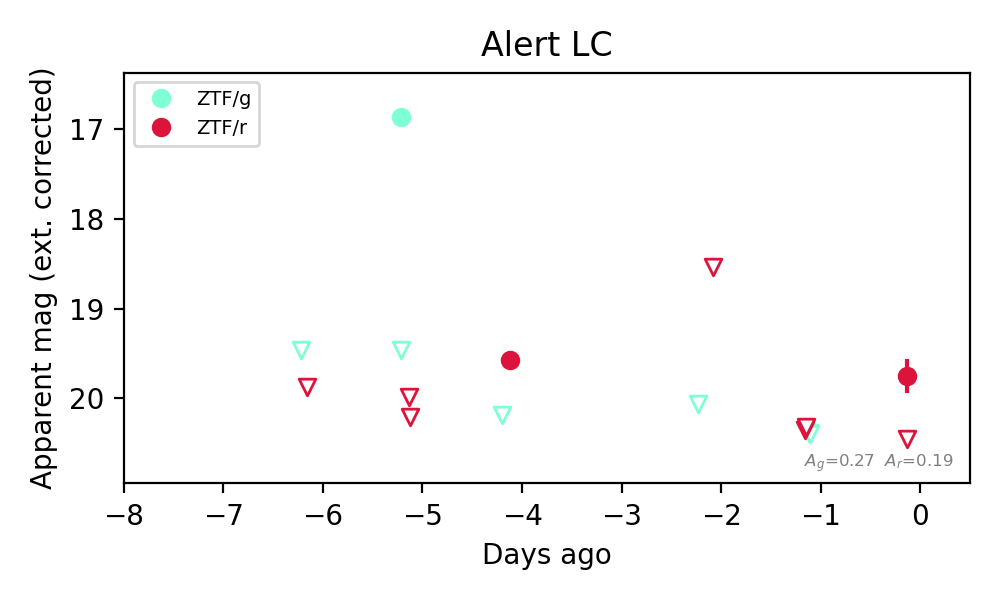
Extinction-corrected gr color:
From alerts: 0.61 +/- 99 mag
Rise Rate:
g: 2.59 mag/day
r: 0.63 mag/day
Fade Rate:
g: 3.27 mag/day
r: 0.26 mag/day